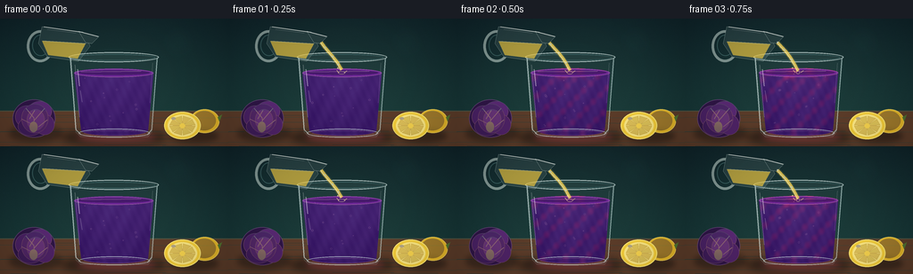
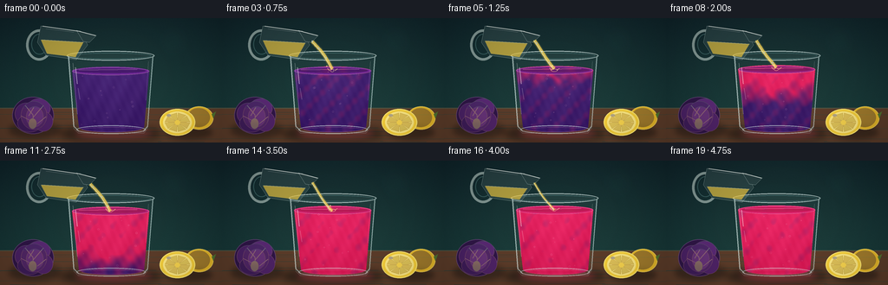
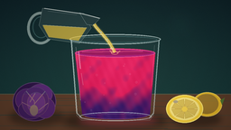

CODING AGENTS AS PIXEL WORLD MODELS
traex/GPT-5.6-Sol · phygen_149
点击播放 · 原生 RGB 像素
逐轮保存的候选
回放视频、检查图与代码变化。
每份候选均可单独播放。实际图片检查记录在下方工具轨迹中。
候选 01播放与检查图
点击播放 · 原生 RGB 像素


展开代码变化
--- 上一保存版本
+++ 本次保存版本
@@ -0,0 +1,317 @@
+from pathlib import Path
+import math
+
+import numpy as np
+from PIL import Image, ImageDraw, ImageFilter
+
+import artifact_io
+
+
+W, H, N = 256, 144, 20
+S = 4
+WW, HH = W * S, H * S
+CASE_DIR = Path(__file__).resolve().parent
+
+
+def sc(v):
+ return int(round(v * S))
+
+
+def ease(x):
+ x = max(0.0, min(1.0, x))
+ return x * x * (3.0 - 2.0 * x)
+
+
+def ellipse(draw, box, **kwargs):
+ draw.ellipse(tuple(sc(v) for v in box), **kwargs)
+
+
+def polygon(draw, pts, **kwargs):
+ draw.polygon([(sc(x), sc(y)) for x, y in pts], **kwargs)
+
+
+def line(draw, pts, width=1, **kwargs):
+ draw.line([(sc(x), sc(y)) for x, y in pts], width=sc(width), **kwargs)
+
+
+def rounded(draw, box, radius, **kwargs):
+ draw.rounded_rectangle(tuple(sc(v) for v in box), radius=sc(radius), **kwargs)
+
+
+def rgba_layer():
+ return Image.new("RGBA", (WW, HH), (0, 0, 0, 0))
+
+
+def backdrop(seed=4):
+ rng = np.random.default_rng(seed)
+ y, x = np.mgrid[0:HH, 0:WW]
+ # A quiet blue-green studio backdrop with a warm pool around the subject.
+ top = np.array([14, 35, 42.0])
+ bottom = np.array([22, 56, 57.0])
+ t = np.clip(y / (HH * .82), 0, 1)[..., None]
+ a = top * (1 - t) + bottom * t
+ warm = np.exp(-(((x-WW*.52)/(WW*.52))**2 + ((y-HH*.55)/(HH*.75))**2))[..., None]
+ a = a + warm * np.array([8, 9, 4])
+ grain = rng.normal(0, 1.25, (HH, WW, 1))
+ a = np.clip(a + grain, 0, 255).astype(np.uint8)
+ a = np.repeat(a, 1, axis=2)
+ img = Image.fromarray(np.dstack([a, np.full((HH, WW), 255, np.uint8)]), "RGBA")
+
+ # Defocused laboratory lights.
+ glow = rgba_layer()
+ gd = ImageDraw.Draw(glow, "RGBA")
+ ellipse(gd, (183, 10, 217, 44), fill=(96, 199, 181, 12))
+ ellipse(gd, (17, 18, 32, 33), fill=(255, 220, 137, 11))
+ ellipse(gd, (224, 56, 240, 72), fill=(118, 211, 199, 9))
+ glow = glow.filter(ImageFilter.GaussianBlur(sc(11)))
+ img = Image.alpha_composite(img, glow)
+
+ # Table and wood grain.
+ table = rgba_layer()
+ td = ImageDraw.Draw(table, "RGBA")
+ polygon(td, [(0, 104), (256, 104), (256, 144), (0, 144)], fill=(93, 61, 42, 255))
+ line(td, [(0, 104), (256, 104)], width=1, fill=(173, 128, 84, 100))
+ for yy, al in [(111, 22), (127, 30), (139, 18)]:
+ line(td, [(0, yy), (256, yy + .8)], width=.55, fill=(231, 178, 112, al))
+ for k in range(13):
+ yy = 106 + rng.uniform(0, 38)
+ x0 = rng.uniform(-20, 220)
+ line(td, [(x0, yy), (x0+rng.uniform(28, 78), yy+rng.uniform(-.8, .8))],
+ width=.35, fill=(50, 31, 23, int(rng.uniform(12, 32))))
+ return Image.alpha_composite(img, table)
+
+
+def draw_cabbage(img):
+ # Purple cabbage head at left, partly cropped like a still-life ingredient.
+ sh = rgba_layer(); d = ImageDraw.Draw(sh, "RGBA")
+ ellipse(d, (10, 120, 70, 139), fill=(7, 10, 12, 100))
+ sh = sh.filter(ImageFilter.GaussianBlur(sc(3.3)))
+ img.alpha_composite(sh)
+ lay = rgba_layer(); d = ImageDraw.Draw(lay, "RGBA")
+ ellipse(d, (14, 91, 62, 134), fill=(48, 22, 72, 255), outline=(105, 70, 125, 210), width=sc(.8))
+ # overlapping leaves
+ leaves = [
+ ((17,98,43,123),(75,34,102,255)), ((31,93,58,116),(90,42,117,255)),
+ ((20,111,48,132),(63,29,90,255)), ((39,108,61,131),(80,36,104,255)),
+ ((24,96,54,129),(83,38,111,230)), ((30,102,50,126),(105,51,130,230))]
+ for b,c in leaves: ellipse(d,b,fill=c,outline=(140,82,153,145),width=sc(.55))
+ # curled pale veins
+ for pts in [[(38,128),(38,112),(29,101)],[(38,115),(50,101)],[(38,120),(24,113)],
+ [(43,122),(53,114)],[(33,113),(39,103)]]:
+ line(d, pts, width=.75, fill=(203,149,199,125))
+ ellipse(d, (33,116,42,128), fill=(204,174,181,115))
+ img.alpha_composite(lay)
+
+
+def draw_lemon(img):
+ sh=rgba_layer(); d=ImageDraw.Draw(sh,"RGBA")
+ ellipse(d,(190,124,245,140),fill=(5,8,7,100)); sh=sh.filter(ImageFilter.GaussianBlur(sc(3)))
+ img.alpha_composite(sh)
+ lay=rgba_layer(); d=ImageDraw.Draw(lay,"RGBA")
+ # whole lemon behind the cut half
+ ellipse(d,(213,102,246,129),fill=(232,185,41,255),outline=(255,224,93,220),width=sc(.8))
+ ellipse(d,(216,104,242,126),fill=(240,195,48,120))
+ polygon(d,[(244,111),(249,108),(246,116)],fill=(81,116,49,255))
+ # juicy cut face
+ ellipse(d,(184,105,225,136),fill=(247,208,59,255),outline=(255,235,118,255),width=sc(1.1))
+ ellipse(d,(188,108,221,133),fill=(255,234,132,255))
+ cx,cy=204.5,120.5
+ for k in range(8):
+ a0=2*math.pi*k/8+.05; a1=2*math.pi*(k+1)/8-.05
+ pts=[(cx,cy),(cx+14.5*math.cos(a0),cy+10.8*math.sin(a0)),
+ (cx+14.5*math.cos(a1),cy+10.8*math.sin(a1))]
+ polygon(d,pts,fill=(255,224+3*(k%2),100,210),outline=(248,204,61,155))
+ ellipse(d,(201.5,118,207.5,123.5),fill=(250,214,79,255))
+ ellipse(d,(192,111,197,114),fill=(255,251,204,145))
+ img.alpha_composite(lay)
+
+
+def glass_mask(surface_y):
+ m=Image.new("L",(WW,HH),0); d=ImageDraw.Draw(m)
+ # Interior: broad at top, subtly tapered at the foot.
+ polygon(d,[(83,surface_y),(172,surface_y),(166,126),(91,126)],fill=255)
+ ellipse(d,(91,120,166,132),fill=255)
+ ellipse(d,(83,surface_y-5,172,surface_y+5),fill=255)
+ return m
+
+
+def liquid_texture(frame, p, surface_y):
+ y,x=np.mgrid[0:HH,0:WW]
+ xf=x/S; yf=y/S
+ yn=np.clip((yf-surface_y)/(128-surface_y),0,1)
+ xn=(xf-83)/89
+ # Acid concentration starts in folding ribbons at the impact point and
+ # then advances downward, which makes the chemistry legible in the timelapse.
+ if p <= 0:
+ acid=np.zeros_like(xf)
+ else:
+ front=p*1.48 - yn*.95
+ acid=np.clip(front*2.35,0,1)
+ phase=frame*.53
+ wav=.5+.5*np.sin(xn*24 + yn*18 - phase)
+ curl=.5+.5*np.sin(xn*39 - yn*25 + phase*1.7)
+ acid=np.clip(acid + (wav-.52)*.26 + (curl-.55)*.10,0,1)
+ # Three descending, turbulent pink fingers.
+ for off,amp,ph in [(-.17,.34,.2),(0,.46,2.1),(.18,.32,4.0)]:
+ center=.5+off+.075*np.sin(yn*12+phase+ph)
+ ribbon=np.exp(-((xn-center)/(.045+.035*yn))**2)
+ reach=1/(1+np.exp((yn-(p*1.12+.05))*22))
+ acid=np.clip(acid+ribbon*reach*amp,0,1)
+ purple=np.array([54.,18.,91.])
+ pink=np.array([213.,19.,82.])
+ rgb=purple[None,None,:]*(1-acid[...,None])+pink[None,None,:]*acid[...,None]
+ # Internal depth, glow at center, and fine moving caustics.
+ centerlight=np.exp(-((xn-.53)/.42)**2)*8
+ depth=(1-yn)*5 - yn*7
+ ripple=3*np.sin(xf*.29+yf*.14-frame*.7)+2*np.sin(xf*.75-yf*.33+frame*.4)
+ rgb += (centerlight+depth+ripple)[...,None]
+ rgb[...,2] += 10*(1-acid)
+ rgb[...,0] += 8*acid
+ alpha=np.full((HH,WW,1),245.)
+ return Image.fromarray(np.uint8(np.clip(np.dstack([rgb,alpha]),0,255)),"RGBA")
+
+
+def draw_glass(img, frame):
+ # Chemistry begins immediately after the establishing frame.
+ p=ease((frame-1)/16)
+ surface_y=61-4.2*ease(frame/18)
+
+ # Cast shadow and the colored caustic under the tumbler.
+ shadow=rgba_layer(); d=ImageDraw.Draw(shadow,"RGBA")
+ ellipse(d,(68,124,186,143),fill=(3,7,7,130))
+ ellipse(d,(88,127,174,139),fill=(174+int(35*p),18,83,30+int(26*p)))
+ shadow=shadow.filter(ImageFilter.GaussianBlur(sc(4.3)))
+ img.alpha_composite(shadow)
+
+ mask=glass_mask(surface_y)
+ tex=liquid_texture(frame,p,surface_y)
+ tex.putalpha(mask)
+ img.alpha_composite(tex)
+
+ # Bright moving surface ellipse and impact depression.
+ surf=rgba_layer(); d=ImageDraw.Draw(surf,"RGBA")
+ base=(104+int(112*p),30-int(8*p),145-int(48*p),255)
+ ellipse(d,(83,surface_y-4.6,172,surface_y+5),fill=base,outline=(239,143,208,105),width=sc(.65))
+ ellipse(d,(87,surface_y-2.8,168,surface_y+2.5),fill=(66+int(120*p),16,101-int(25*p),210))
+ line(d,[(91,surface_y-1),(158,surface_y-1.7)],width=.7,fill=(255,181,219,100))
+ # Tiny vortex/impact ring while pouring.
+ if 1 <= frame <= 17:
+ r=3.1+1.0*math.sin(frame*1.5)
+ ellipse(d,(127-r,surface_y-1.4,127+r,surface_y+1.6),outline=(255,225,174,145),width=sc(.6))
+ img.alpha_composite(surf)
+
+ # Bubbles carried down through the reacting juice.
+ bub=rgba_layer(); d=ImageDraw.Draw(bub,"RGBA")
+ for k in range(13):
+ bx=94+((k*29+frame*2.1*(1+k%3))%65)
+ by=123-((k*13+frame*(1.0+k%4)*1.8)%61)
+ r=.45+(k%3)*.25
+ ellipse(d,(bx-r,by-r,bx+r,by+r),outline=(255,192,222,60+(k%4)*15),width=sc(.35))
+ img.alpha_composite(bub)
+
+ # Thick glass shell, rim, refractions and base.
+ g=rgba_layer(); d=ImageDraw.Draw(g,"RGBA")
+ # Outside silhouette is mostly transparent, carried by highlights.
+ polygon(d,[(78,42),(177,42),(170,128),(166,133),(90,133),(85,128)],
+ fill=(205,240,237,10),outline=(202,235,231,120))
+ ellipse(d,(77,37.7,178,49),fill=(223,247,244,15),outline=(231,250,247,175),width=sc(1.05))
+ ellipse(d,(81,40,174,47.2),outline=(116,174,176,105),width=sc(.65))
+ line(d,[(79,44),(85,125),(91,131)],width=1.2,fill=(238,255,251,155))
+ line(d,[(176,44),(170,125),(165,131)],width=1.05,fill=(225,251,247,145))
+ line(d,[(84,52),(89,111)],width=.7,fill=(255,255,255,72))
+ line(d,[(171,50),(168,95)],width=.55,fill=(255,255,255,58))
+ # Broken specular streaks.
+ line(d,[(87,57),(89,76)],width=1.25,fill=(255,255,255,105))
+ line(d,[(90,81),(92,94)],width=.75,fill=(255,255,255,65))
+ ellipse(d,(88,124,168,134),outline=(223,244,239,150),width=sc(1.0))
+ ellipse(d,(94,126,163,131.8),outline=(255,203,229,55),width=sc(.65))
+ img.alpha_composite(g)
+
+
+def draw_pitcher_and_stream(img, frame):
+ # A small clear creamer remains in shot throughout; juice visibly pours
+ # for most of the compressed five-second transformation.
+ active=frame <= 16
+ lay=rgba_layer(); d=ImageDraw.Draw(lay,"RGBA")
+ # Handle behind the body.
+ d.ellipse((sc(30),sc(13),sc(60),sc(49)),outline=(231,248,239,130),width=sc(3))
+ d.ellipse((sc(36),sc(18),sc(55),sc(42)),outline=(96,145,143,110),width=sc(1))
+ # tilted glass creamer
+ polygon(d,[(47,9),(93,15),(101,31),(88,48),(53,43),(43,28)],
+ fill=(214,240,231,24),outline=(232,250,243,155))
+ # lemon juice inside, lower amount as the pour proceeds
+ q=frame/19
+ polygon(d,[(47,25+5*q),(96,28+5*q),(87,45),(54,41)],
+ fill=(245,206,70,175),outline=(255,231,128,115))
+ # upper juice surface remains roughly horizontal
+ line(d,[(48,25+5*q),(96,28+5*q)],width=.7,fill=(255,243,171,170))
+ # spout and rim
+ polygon(d,[(88,14),(111,20),(103,28),(96,27)],fill=(224,246,238,22),outline=(237,252,247,170))
+ line(d,[(49,9),(91,15),(110,20)],width=1.1,fill=(252,255,249,190))
+ line(d,[(53,12),(85,16)],width=.55,fill=(255,255,255,100))
+ img.alpha_composite(lay)
+
+ if active and frame >= 1:
+ # Curved translucent stream: gold core, sparkling edges, tiny droplets.
+ st=rgba_layer(); d=ImageDraw.Draw(st,"RGBA")
+ phase=frame*.75
+ x0,y0=104,26
+ pts=[]
+ for j in range(18):
+ u=j/17
+ x=x0+(127-x0)*u+1.25*math.sin(u*math.pi)*math.sin(phase)
+ y=y0+(58-y0)*u+.9*math.sin(u*math.pi*1.6+phase)
+ pts.append((x,y))
+ width=max(1.6,3.6-(max(0,frame-12))*.38)
+ line(d,pts,width=width+2.2,fill=(255,220,101,38))
+ line(d,pts,width=width,fill=(249,213,86,210))
+ edge=[(x-.8,y) for x,y in pts]
+ line(d,edge,width=.55,fill=(255,251,208,215))
+ # A few highlights travel down the stream.
+ for k in range(3):
+ u=((frame*.23+k*.31)%1)
+ j=min(16,int(u*17)); x,y=pts[j]
+ ellipse(d,(x-.7,y-1,x+.7,y+1),fill=(255,255,218,180))
+ img.alpha_composite(st)
+
+ # impact splash and occasional airborne droplet
+ sp=rgba_layer(); d=ImageDraw.Draw(sp,"RGBA")
+ sy=61-4.2*ease(frame/18)
+ line(d,[(124,sy),(121.5,sy-2.8)],width=.7,fill=(255,222,153,145))
+ line(d,[(130,sy),(133,sy-2.2)],width=.65,fill=(255,222,153,140))
+ ellipse(d,(120+(frame%3)*2,sy-6,121.4+(frame%3)*2,sy-4.5),fill=(255,228,153,170))
+ img.alpha_composite(sp)
+
+
+def finish_frame(img, frame):
+ # Subtle cinematic vignette and one stable warm highlight.
+ arr=np.asarray(img.convert("RGB"),dtype=np.float32)
+ y,x=np.mgrid[0:HH,0:WW]
+ dx=(x-WW/2)/(WW/2); dy=(y-HH*.5)/(HH*.72)
+ vig=np.clip(1-.14*(dx*dx+dy*dy),.78,1)[...,None]
+ arr*=vig
+ # Mild timelapse exposure breathing, kept subtle enough not to flicker.
+ arr*=1+.008*math.sin(frame*.45)
+ out=Image.fromarray(np.uint8(np.clip(arr,0,255)),"RGB")
+ return out.resize((W,H),Image.Resampling.LANCZOS)
+
+
+def make_frame(frame, bg):
+ img=bg.copy()
+ # props are behind the central glass
+ draw_cabbage(img)
+ draw_lemon(img)
+ draw_glass(img,frame)
+ draw_pitcher_and_stream(img,frame)
+ return np.asarray(finish_frame(img,frame),dtype=np.uint8)
+
+
+def main():
+ bg=backdrop()
+ frames=np.stack([make_frame(i,bg) for i in range(N)],axis=0)
+ artifact_io.save(frames,CASE_DIR)
+ print(f"Saved {frames.shape[0]} RGB frames at {frames.shape[2]}x{frames.shape[1]}")
+
+
+if __name__ == "__main__":
+ main()
可观测工具轨迹
实际执行的命令与返回图片。
命令 1exit 0
/bin/bash -lc "cat prompt.txt && printf '\\n--- GENERATION_RULES ---\\n' && cat GENERATION_RULES.md"
命令 2exit 0
/bin/bash -lc "cat task_spec.json && printf '\\n--- FILES ---\\n' && find . -maxdepth 2 -type f -printf '%p\\n' | sort"
命令 3exit 0
/bin/bash -lc "command -v ffmpeg; command -v blender; command -v python3; python3 - <<'PY' mods=['PIL','numpy','cv2','imageio','scipy'] for m in mods: try: x=__import__(m); print(m,'OK',getattr(x,'__version__','')) except Exception as e: print(m,'NO',e) PY"
命令 4exit 0
/bin/bash -lc "sed -n '1,240p' artifact_io.py"
命令 5exit 0
/bin/bash -lc 'python3 generate.py'
命令 6exit 0
/bin/bash -lc "python3 - <<'PY'
from pathlib import Path
import numpy as np
from PIL import Image
fs=sorted(Path('frames').glob('*.png'))
a=np.stack([np.asarray(Image.open(p)) for p in fs])
print('shape',a.shape,'dtype',a.dtype,'range',a.min(),a.max())
print('mean RGB first/mid/last:',*[np.round(a[i].mean((0,1)),1) for i in [0,10,19]])
print('adjacent mean abs deltas:',np.round(np.abs(np.diff(a.astype(float),axis=0)).mean((1,2,3)),2))
print('artifacts:',[(p.name,p.stat().st_size) for p in [Path('pixels.npz'),Path('index.html'),Path('inspection.png')]])
PY"视觉工具实际返回图片 1

视觉工具实际返回图片 2

保存候选 1 份；完成命令 6 次；可验证图片返回 2 张。原始 API 响应与完整日志保留在本地。